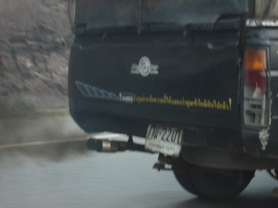

Poradňa autoservisu autoZ
Dym z výfuku: biely, modrý, čierny
Farba dymu z výfuku veľa prezradí o tom, čo sa v motore deje. Biely dym za studena je väčšinou len vodná para, modrý znamená spaľovanie oleja a čierny príliš bohatú zmes. Prehľad príčin a kedy s autom ďalej nejazdiť.

Zastavte a ďalej nejazdite. Motor pravdepodobne spaľuje chladiacu kvapalinu a môže sa prehriať. To isté platí pri veľkom množstve modrého dymu a kontrolke oleja.
Zvyčajne môžete opatrne dôjsť do servisu. Sledujte hladinu oleja a chladiacej kvapaliny a príčinu dajte zistiť – olej v spalinách poškodzuje katalyzátor aj filter pevných častíc.
Čo znamená farba dymu
| Farba a kedy | Pravdepodobná príčina | Čo s tým |
|---|---|---|
| Biely, riedky, za studena, po zahriatí zmizne | kondenzovaná vodná para, v chladnom a vlhkom počasí je to normálne | nič, ak po zahriatí zmizne |
| Biely, hustý, sladkastý zápach, trvá aj po zahriatí | spaľovanie chladiacej kvapaliny – tesnenie hlavy, prasknutá hlava valcov, pri naftových motoroch aj chladič EGR | nejazdiť, hrozí prehriatie |
| Bielosivý pri naftovom motore, štipľavý zápach nafty | nespálená nafta – žhaviace sviečky, vstrekovače, termostat, studený motor | diagnostika |
| Modrý alebo modrosivý, zápach spáleného oleja | spaľovanie oleja – tesnenia ventilov, piestne krúžky, turbodúchadlo, odvetranie kľukovej skrine, preliaty olej | sledovať olej, zistiť príčinu |
| Čierny (naftový motor) | príliš veľa paliva alebo málo vzduchu – vstrekovače, únik plniaceho vzduchu, turbodúchadlo, ventil EGR, upchatý vzduchový filter | diagnostika |
| Čierny (benzínový motor) | bohatá zmes – vstrekovače, snímače zmesi, lambda sonda | diagnostika |
Auto s funkčným filtrom pevných častíc (DPF) by čierny dym nemalo púšťať. Ak dymí, filter môže byť poškodený.
Ako farbu a príčinu rozoznať
- Pozrite dym za denného svetla pri zahriatom motore, ideálne s pomocou druhej osoby, ktorá pridá plyn.
- Priložte biely papier ku koncu výfuku: mastné škvrny ukazujú na olej, čierne sadze na bohatú zmes, číre kvapky na vodu.
- Ovoňajte dym: sladkastý zápach patrí chladiacej kvapaline, spálený olej je ťažký a štipľavý, nafta a benzín sú poznať.
- Sledujte hladiny: ak ubúda olej, motor ho spaľuje alebo uniká; ak ubúda chladiaca kvapalina bez stopy pod autom, môže končiť v spaľovacom priestore.
Čo urobiť, keď auto dymí
- Pri hustom bielom dyme, stúpajúcej teplote alebo kontrolke oleja zastavte a vypnite motor.
- Pri vychladnutom motore skontrolujte hladinu chladiacej kvapaliny. Horúcu nádobku neotvárajte – kvapalina je pod tlakom.
- Skontrolujte hladinu oleja mierkou. Preliaty olej môže tiež spôsobiť modrý dym.
- Zapamätajte si, kedy auto dymí: pri štarte, na voľnobehu, pri pridaní plynu alebo pri brzdení motorom.
- Dajte urobiť diagnostiku a kontrolu motora. Pri podozrení na tesnenie hlavy sa robí test spalín v chladiacej kvapaline a tlaková skúška.
Prečo dym neignorovať
Olej a chladiaca kvapalina v spalinách zanášajú katalyzátor, filter pevných častíc aj lambda sondy. Spaľovanie chladiacej kvapaliny môže viesť k prehriatiu a ďalšiemu poškodeniu motora. Dymiace auto navyše neprejde emisnou kontrolou. Ďalšie príznaky porúch nájdete na hlavnej stránke autoporucha.sk.
Časté otázky
Je biely dym z výfuku v zime normálny?
Áno, ak je riedky, ide za studena a po zahriatí motora zmizne. Je to kondenzovaná vodná para. Hustý biely dym, ktorý trvá aj po zahriatí, normálny nie je.
Čo znamená modrý dym z výfuku?
Motor spaľuje olej. Príčinou môžu byť tesnenia ventilov, piestne krúžky, turbodúchadlo alebo odvetranie kľukovej skrine. Sledujte hladinu oleja a príčinu dajte zistiť.
Prečo naftové auto dymí načierno?
Do valcov ide príliš veľa paliva alebo málo vzduchu. Častou príčinou sú vstrekovače, únik plniaceho vzduchu, turbodúchadlo, ventil EGR alebo upchatý vzduchový filter.
Môžem jazdiť, keď z výfuku ide biely dym?
Ak je to len para za studena, áno. Ak je dym hustý aj po zahriatí, ubúda chladiaca kvapalina alebo stúpa teplota, nejazdite – hrozí prehriatie motora.
Kde v Trenčíne zistia, prečo auto dymí?
V autoservise autoZ na ulici gen. M. R. Štefánika 6670/19 v Trenčíne, pri Kauflande. Objednať sa môžete na 0910 606 999 alebo online na autoz.sk/rezervacia.
Auto dymí z výfuku? Zistíme príčinu.
Diagnostiku aj opravu motora robíme v autoservise autoZ v Trenčíne. Zavolajte, pošlite video dymu na WhatsApp alebo sa objednajte online.
autoZ – autoservis Zelman · gen. M. R. Štefánika 6670/19, 911 01 Trenčín (pri Kauflande)
Tel. 0910 606 999 · Po–Pi 8:00–16:30
Viac na autoz.sk: Oprava motora Trenčín